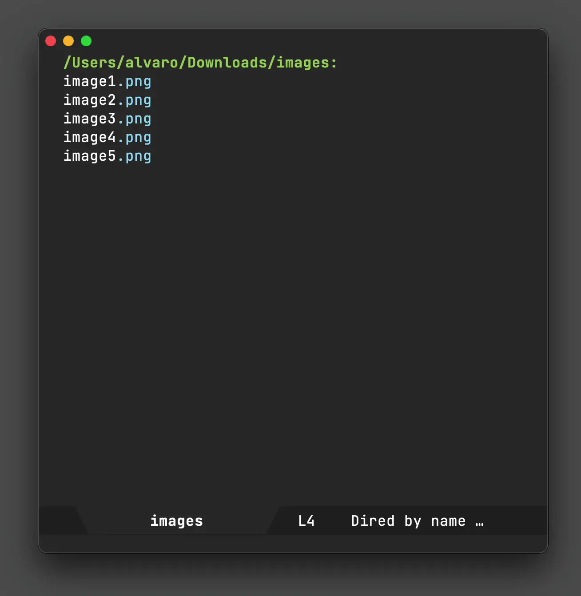

Álvaro Ramírez
12 October 2022 Emacs: macOS sharing (DWIM style)
UPDATE: See an improved implementation here.
A few days ago, I wrote dwim-shell-commands-macos-reveal-in-finder. While I've written a bunch of other dwim-shell-commands, what set this case apart was the use of Swift to glue an Emacs workflow.
(defun dwim-shell-commands-macos-reveal-in-finder () "Reveal selected files in macOS Finder." (interactive) (dwim-shell-command-on-marked-files "Reveal in Finder" "import AppKit NSWorkspace.shared.activateFileViewerSelecting([\"<<*>>\"].map{URL(fileURLWithPath:$0)})" :join-separator ", " :silent-success t :shell-pipe "swift -"))
There is hardly any Swift involved, yet it scratched a real itch I couldn't otherwise reach (reveal multiple dired files in macOS's Finder).
divinedominion's reddit comment got me thinking of other use-cases, so I figured why not push this Swift-elisp beeswax a little further… Let's add macOS's sharing ability via dwim-shell-command, so I could invoke it from the comfort of my beloved dired or any 'ol Emacs buffer visiting a file.
(defun dwim-shell-commands-macos-share () "Share selected files from macOS." (interactive) (let* ((position (window-absolute-pixel-position)) (x (car position)) (y (- (x-display-pixel-height) (cdr position)))) (dwim-shell-command-on-marked-files "Share" (format "import AppKit _ = NSApplication.shared NSApp.setActivationPolicy(.regular) let window = InvisibleWindow( contentRect: NSRect(x: %d, y: %s, width: 0, height: 0), styleMask: [], backing: .buffered, defer: false) NSApp.activate(ignoringOtherApps: true) DispatchQueue.main.async { let picker = NSSharingServicePicker(items: [\"<<*>>\"].map{URL(fileURLWithPath:$0)}) picker.delegate = window picker.show( relativeTo: .zero, of: window.contentView!, preferredEdge: .minY) } NSApp.run() class InvisibleWindow: NSWindow, NSSharingServicePickerDelegate, NSSharingServiceDelegate { func sharingServicePicker( _ sharingServicePicker: NSSharingServicePicker, didChoose service: NSSharingService? ) { if service == nil { print(\"Cancelled\") // Delay so \"More...\" menu can launch System Preferences DispatchQueue.main.asyncAfter(deadline: .now() + 0.1) { NSApplication.shared.terminate(nil) } } } func sharingServicePicker( _ sharingServicePicker: NSSharingServicePicker, delegateFor sharingService: NSSharingService ) -> NSSharingServiceDelegate? { return self } func sharingService( _ sharingService: NSSharingService, didShareItems items: [Any] ) { NSApplication.shared.terminate(nil) } func sharingService( _ sharingService: NSSharingService, didFailToShareItems items: [Any], error: Error ) { let error = error as NSError if error.domain == NSCocoaErrorDomain && error.code == NSUserCancelledError { NSApplication.shared.terminate(nil) } exit(1) } }" x y) :silent-success t :shell-pipe "swift -" :join-separator ", " :no-progress t :utils "swift")))
Sure there is some trickery involved here (like creating an invisible macOS window to anchor the menu), but hey the results are surprisingly usable. Take a look…

I've pushed dwim-shell-commands-macos-share to dwim-shell-commands.el in case you'd like to give it a try. It's very much an experiment of sorts, so please treat it as such. For now, I'm looking forward to AirDropping more files and seeing if the flow sticks. Oh, and I just realised I can use this to send files to iOS Simulators. Win.
dwim-shell-command is available on melpa. What other uses can you find for it?